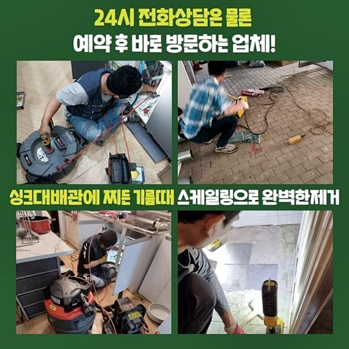
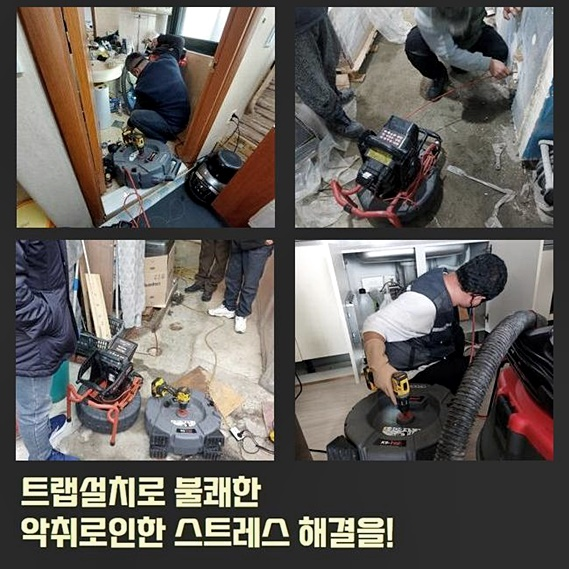
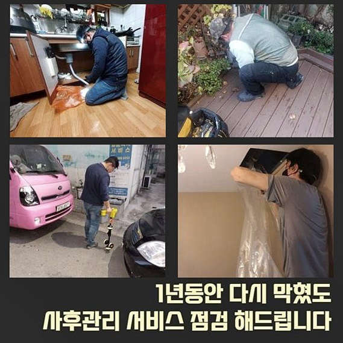
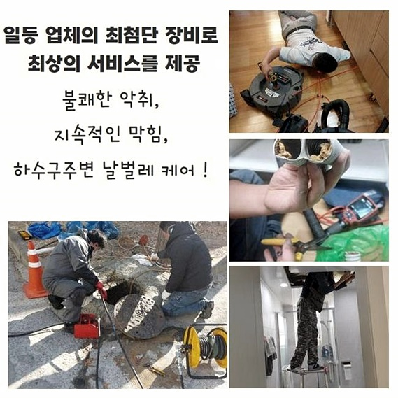
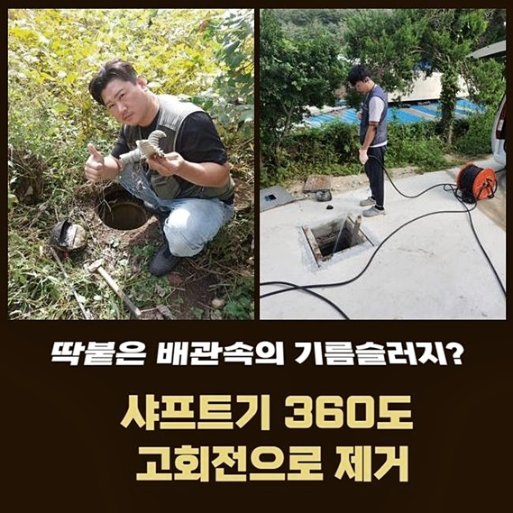
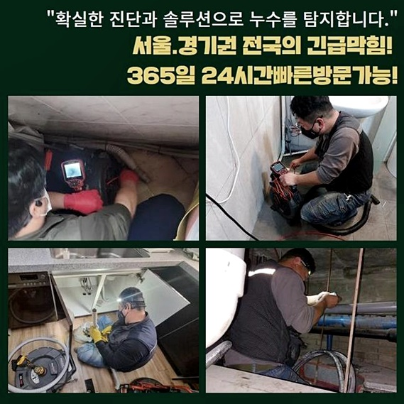

🏠 부평구 부평동화장실하수구막힘 일신동 하수구뚫어주는업체 배관뚫는업체
용인 하수구막힘 전문 시공 후기

📋 작업 개요
- 위치: 용인
- 서비스 유형: 하수구막힘, 배관막힘, 역류해결, 뚫는업체, 배관청소, 고압세척
- 작업 일시: 2024. 8. 8. 18:09
- 업체명: 하수구수사대 (010-5615-2118)
🔍 문제 상황
부평구 부평동화장실하수구막힘 일신동 하수구뚫어주는업체 배관뚫는업체
건물의 경우 세울때 각 라인들을 같이 깔아두기에 생활의 부분에서 편하게 만듭니다
허나 시간의 경과에따라 하수배수관은 낡아서 2차적인 문제까지 발발케합니다
오래전에 세워진 건축물에서 배관 관련 문제들이 생긴걸 확인했습니다
지금부터는 막히게되는 사태가 얼마만큼 불편들을 끼치는지 알려주는 시간인데요
증상을 잠재우기위해서는 전문진의 경험들이 수반되어야 하기에 즉시 전문인과 문제들을 바로잡기위해 의뢰를 고려하는게 올바른 방법이에요
내구성이 떨어진다면 내측에 잔해물들이 축적되어 통수과정을 막아섭니다
그리고 하수관로에서 하수가 흐르며 기름이라던지 머리카락뭉치로 대표되는 잔해가 순차적으로 배관 내부로 모이게되는데요
이물들은 하수도 안에서 강도를 불려가며 큰 부피를 형성해내면서 하수시스템 오류를 자아내죠
그러므로 배수설비의 노후화 문제 시정을 막으려면 주기성을 갖춘 관리들이 행해져야 함은 분명합니다 마찬가지로 잔해물이 안쌓이게 유의해주시면 됩니다
비용과 시간을 투자한 다음 하수관로를 안정적으로 관리하는게 생활에 있어서 편리들을 지켜내는데 좋은데요
반대로 잔해가 쌓인걸 방치할 시 2차 피해가 생겨날 가능성들이 있어 이물을 청소하고 깨끗히 정비를 실시하는게 중요하죠

🔎 원인 분석
💡 전문가 진단: 정밀 진단 장비를 사용하여 슬러지의 고착 여부를 판명하고 타격/세척 작업을 실시했습니다.
석션기기를 써서 이물질을 청소하고 작업들을 시작하는건 해결에 있어서 중요한 작용을 하는데요
이렇듯 간헐적으로라도 관리해주는 과정을 통한다면 배수관 오류를 막을 가능성이 커집니다
이물들이 쌓이게된 배수관과 슬러지의 흐름을 인지하고 증상의 근간이 되는 이유들을 알아야되겠습니다
이러한 내용을 초고로해서 적재적소 내용을 준수하고 진행시켜주면 완성도높은 결과들을 얻게될거에요
흔히 보이는 배수관에 효과가있는 제품을 애용하는건 잠깐동안의 문제들을 누그러뜨리지만 완벽한 해결방법이 되지 않아요
전문업체의 실력으로 정확한 원인규명과 조속한 처리를 이어간다면 하수구막힘 문제들을 오차없게 수리해요
기술들과 이전의 경험을 초고하여 작업들을 이어나가면 최고의 결과물을 보실 수 있으십니다
이왕이면 전문인들의 도움들로 안정적인 이물제거를 실시하는게 우선입니다
때문에 이상징후가 벌어졌을 때 서둘러 전문업체와 컨택해 전화하시어 해결하는데에 집중해야하죠
배수구로 흐르는 속력이 저하되었거나 역류문제가 생겨나는것과 같은 2차적인 피해가 발생될때 더욱 중요한데요
작업이 수행되지 못하면 설치된 라인에서 문제들이 생길 수 있으며 2차적 피해들로 심화될지 몰라요
일반적으로 이물이 누적되어있는 배수관은 흡입도구 내시경기계 샤프트를 이용해줘요

🔧 작업 과정
이물질들을 없앨 목적으로 밀어내고 스케일링 실시 및 고압 세척을 이어간다면 청결하게 하수배관을 수리해요
작업 중에 이물질을 천천히 없애주고 적합한 장비를 사용해 하수도를 구석구석 수리해요
무분별한 작업 개시는 증상을 안좋게 만들기에 충분해요 내시경장비는 깊어서 확인하기에 힘든 위치도 파악가능하므로 유용하게 쓰이죠
잔해물들의 양상들을 파악해서 대응책을 이행하고있어요
워터젯 고압세척을 이어간다면 잔해물을 제대로 제거시켜드려요
전문인의 조언으로 안정적으로 세척들을 진행시키는게 우선입니다
전문성이 뛰어난 접근 방식을 이어간다면 하수구막힘 문제들을 제대로 고쳐드리고 있어요
무리하게 작업하지말고 전문업체의 해결들을 따라 대응책들을 확고히 하시는것이 중요하죠
배수관에 문제가 생겼을때 배수 유속들이 떨어지고 역류문제들이 발생되므로 외부로 배수되는 속도들이 둔화되는 문제들을 마주하게 되요
이 단계에서 관로에선 팽창들이 지속되면서 균열들이 야기되므로 감당하기 힘든 복합적인 증세를 겪어야만 하는데요
이러한 까닭에 작업시간을 설정하지 않는게 우선입니다
달려갔었던 고객의 집에서는 화장실내부서 악취들이 심하게 났고 이로인해 문제들이 이루 말할 수 없었죠
물을 배출시켜 역류하게되는 현상들을 살피게되었어요
오수들이 빠지질 못하거나 간헐적으로라도 역류증세가 불거지는지 세심히 알아보았죠
이렇듯 함으로써 전문인은 문제 까닭들을 알아내 이물제거에 변수들을 생각하지 않을 수 있는데요
오염원을 제거하고서 시멘트들로 연결된 곳을 깨끗히 분리시켜서 문제의 배관을 체크했습니다
내시경기기로 깊은 곳까지 증상이 시작되는 위치확인 후 어째서 배출되지 못하는건지 까닭을 찾아내기 위해 불철주야 노력했는데요
의뢰자에게 배관 상태를 공유하고 안내하여 완벽하게 시정되었음을 말씀드렸죠
무엇때문에 막혀버리는 현상이 발생된건지 찾아내어 까닭들을 청소하고, 베스트의 해결에 관한 대처를 찾아내는것에 혈안이 되어있었죠


✅ 작업 완료
그렇기에 고객의 고민을 해소시켜드리고 베스트의 서비스들을 지원하기위해 최선의 방식만을 추구합니다
저희전문진이 의뢰인분의 가정에 내방하기에 앞서서 여타 다른곳에서 내방했지만 문제들이 변화가 없어 찾아보시다가 저희들을 보시게 된거에요
의뢰인은 저희들의 작업방식에 만족을 표하셨고 뚫어내지 못하면 금액을 안받고있고 사후관리를 제공해주는게 맘에 들었다고 하셨어요
다양한 작업방식을 마련하여 고민을 줄여나가 고객의 편의를 보장하도록 거듭 달리겠습니다
시간에 상관없이 언제라도 전화주신다면 재빠르게 달려갈게요!



⚠️ 하수구 배관 막힘 예방 및 관리 가이드
- ✅ 머리카락, 비닐, 물티슈 등 물에 분해되지 않는 이물질은 하수구 유입을 절대 금지해 주세요.
- ✅ 하수구 거름망을 씌우고 모여진 이물질은 주기적으로 쓰레기통에 바로 비워주셔야 합니다.
- ✅ 배관 노후가 심할 경우 이물질이 더 쉽게 걸리므로 주기적인 배관 세척(고압세척 등)을 권장합니다.
- ✅ 작업 후 1년 이내 재발 시 하수구수사대에서 무상 A/S 보증 서비스를 제공합니다.
💡 핵심 정리
- 확실한 장비 작업(내시경 점검 및 샤프트 스케일링)으로 원인을 뿌리 뽑습니다.
- 작업 후 1년 이내에 동일한 부위 재발 시 100% 무상 A/S 서비스를 보장합니다.
- 서울 · 경기 · 인천 전 지역에 24시간 언제든 긴급 출동할 수 있도록 항시 대기 중입니다.
❓ 자주 묻는 질문 (FAQ)
🚨 용인 하수구막힘 문제로 고민이신가요?
정확한 원인 진단과 확실한 시공으로 재발 없는 해결을 약속드립니다.
24시간 긴급 출동 | 서울 · 경기 · 인천 전지역 | 1년 내 재발 시 무상 A/S